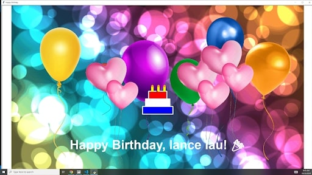
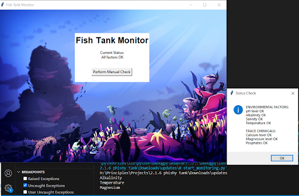

Welcome to my Portfolio Page!
Project 1.1.9: Tic Tac Toe
.jpg)
In our first project, our group created an interactive Tic Tac Toe game that can be played between two players.
Project 1.2.5: Snake Game

In our second project, our group recreated and innovated on the classic snake game by allowing users to choose their snake color and added obstacles which are randomly generated.
Project 1.3.1: Birthday Card

In our third project, our group made an interactive birthday card that can customize the name, candles, and cake colors. The card also sings and has moving balloons.
Project 2.1.6: Phishy Fish Tank

In our fourth project, our group decrypted and debugged to access the Fish Tank Monitor and resolve all of the unexpected errors within the code
Scratch Project
In our 5th project, our group created a game inspired by the popular video game series Five Nights at Freddy's in which you have to click on the animatronic before you get jumpscared and lose the game
Project 2.2.7: Creating a GUI

In our sixth project, our group created our very own GUI which has working ping, tracert, nslookup, and save functions to any URL inserted